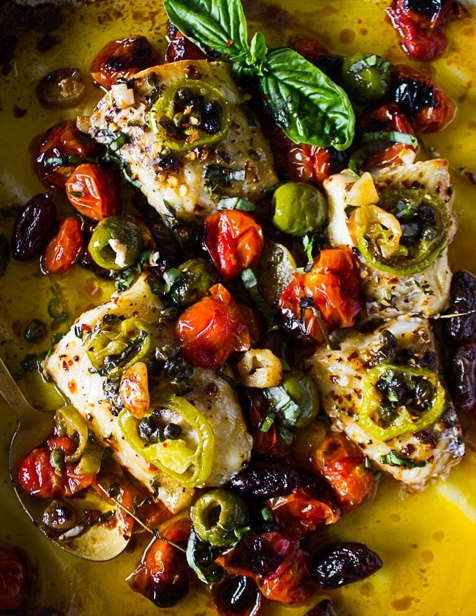

How to cook Fish in Mediterenean Sause
Ingredients:

White fish fillet.
Tomato passata.
Green olives.
Garlic.
Red onion.
Capers.
Olive oil.
2 Celery sticks.
1 Green chilli pepper.
100 ml white wine.
Pink salt.
Black pepper.
Instructions:
Warm up an olive oil.
Add garlic and red onion into warm olive oil.
Add capers and green olives.
Add chopped celery sticks and chilli pepper.
Gently mix everything and slowly pour tomato passata.
Carefully pour white wine and allow to simmer.
Add fish fillet and tossing frequently 2-3 minutes.
Add salt and pepper.
Add seasonal greens if desired.